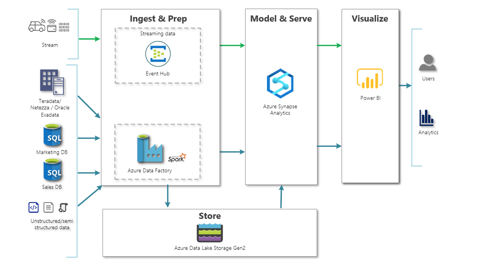

Building end-to-end ML pipelines for predictive repairs
The predictive maintenance workflow typically includes following main 5 elements.
- Access sensor data. Make sure the data is in the right format. Large data sets may not fit into computer memory, and will require out-of-memory processing techniques or a cluster.
- Preprocess data. Data in the real world is rarely perfect; it may have obvious outliers and noise that need to be removed to get a realistic picture of normal behavior. If the data has come from different sources, it will also need to be combined.
- Extract features. Instead of feeding sensor data directly into machine learning models, it is common to extract features from the sensor data. These features capture higher-level information in the sensor data. An iterative approach—in which features are added, new models are trained, and their performance is compared can work well here to determine the effectiveness of different features on the results.
- Train the model. In this step, we classify data as healthy/faulty, set thresholds for healthy/warning/failure states, and estimate remaining useful life for components. We’ll need to create a comprehensive list of failure scenarios to predict, choose classification methods, and simulate models.
- Deploy the model. Generate code and deploy models as an application integrated with other applications in an IT environment. (Models may be deployed to embedded devices by converting them to a low-level language such as C.)

Basic workflow for predictive maintenance.
